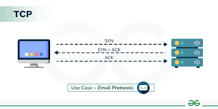

The Transmission Control Protocol is one of the main protocols of the internet protocol suite providing reliable, ordered ad error-checked delivery of a stream of octets(bytes) between applications running on hosts communicating via an IP network.
Therefore the entire suite is commonly reffered to as TCP/IP. the TCP provides a communication service at an intermediate level between an application program and the IP. It provides a hot-to-host connectivity at the transport layer of the internet model.
